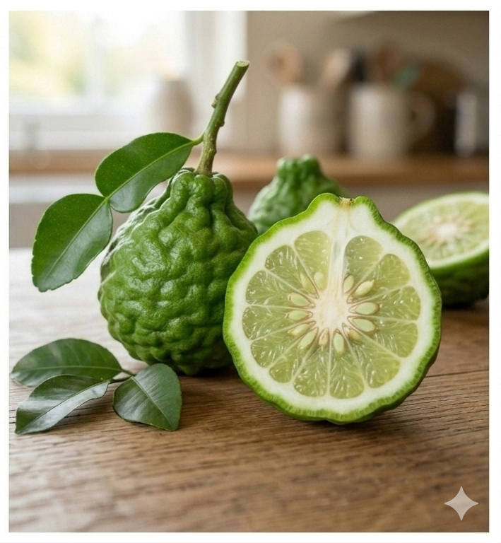

What is a Papeda?

Papedas represent a distinct subgenus of primitive, wild citrus ancestors native to tropical Asia. While the fruits themselves are generally small, seedy, and far too bitter to eat fresh, the plants possess incredibly potent essential oils that are vital to global gastronomy.
Key Characteristics
- Taste: Intensely sour, astringent, and highly bitter pulp.
- Peel: Distinctly bumpy, wrinkled, and deeply textured dark green skin.
- Ancestry: A core wild lineage that contributed genetic traits to several cold-hardy modern hybrids.
Popular Varieties
This subgenus includes several highly specialized culinary and wild plants:
- Kaffir Lime (Makrut): Renowned globally for its distinct double-lobed leaves and aromatic fruit zest.
- Ichang Papeda: A remarkably cold-hardy wild citrus plant native to southwestern China.
- Khasi Papeda: A wild variety native to India, featuring highly winged leaves.
Cultural Significance
Papedas are indispensable pillars of Southeast Asian cuisine. The leaves and rind of the Kaffir (Makrut) lime provide the foundational, bright aroma for iconic dishes such as Thai Tom Yum soup and Malaysian curries, while also featuring heavily in traditional herbal baths and cosmetics.